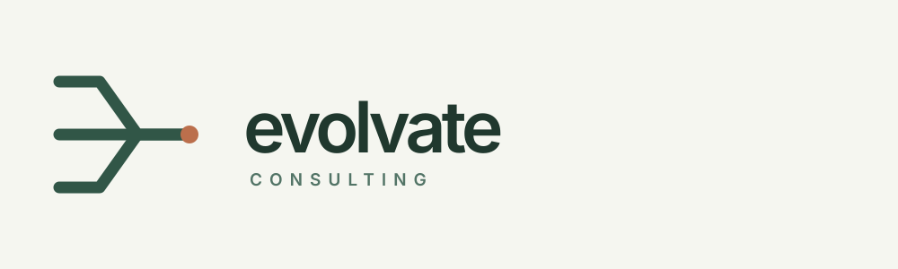
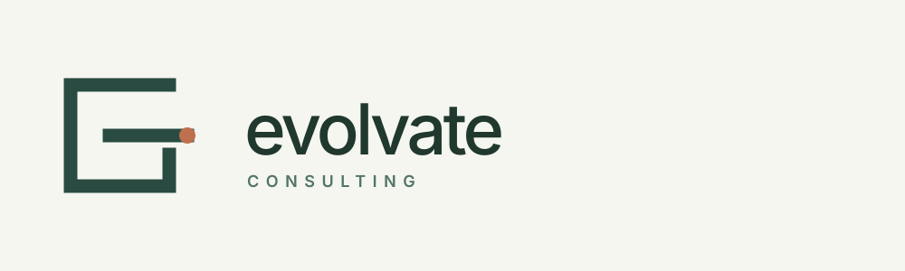
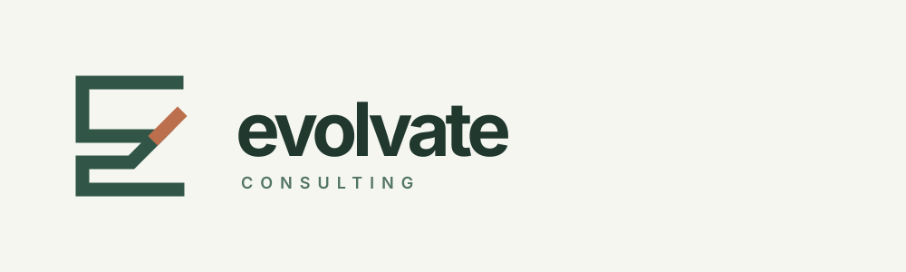
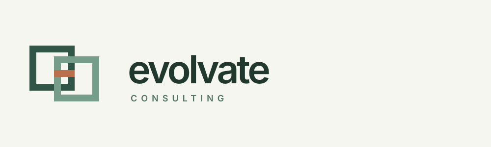
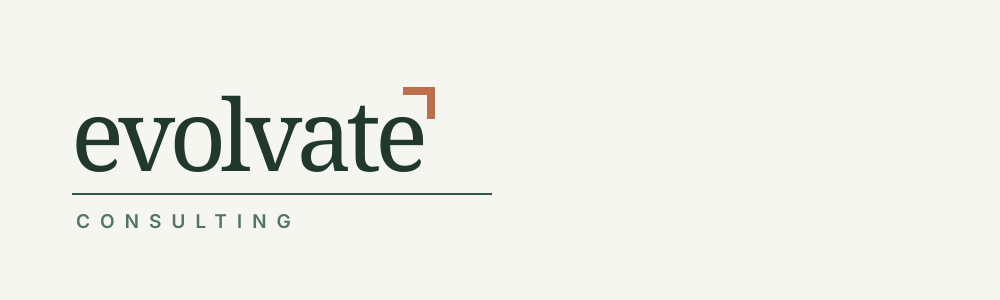

Simple, original starting points built around clarity, connected expertise, and decisive movement. All five are editable vectors. Select a direction to refine its proportions, lettering, color, and small-size use.




